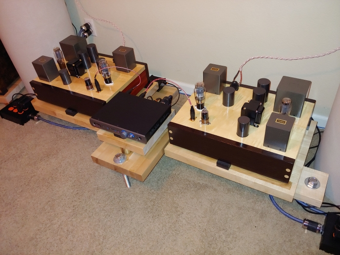

| Paduk and Wenge |
Frame assembly |
 |
 |
| Maple top plates |
Assembled chassis |
 |
 |
| Linseed oil and polyurethane |
Power TX humidity removal before potting |
 |
 |
| Cooling thermal epoxy |
Initial pour of thermal epoxy |
 |
 |
| Tango can pre epoxy |
Power supply caps and sockets |
 |
 |
| Chassis front with TX |
Chassis rear with TX |
 |
 |
| AC power inlet |
Top plate with tubes installed |
 |
 |
| Completed A |
Completed B |
 |
 |
| Humpot A |
Humpot B |
 |
 |
| Underside left channel |
Tango XE20s hand-wound in Japan! |